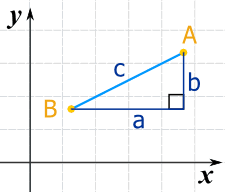
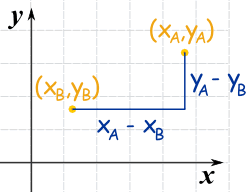
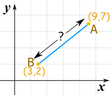
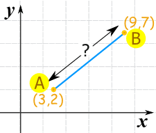
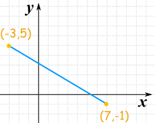

Distance Between 2 Points
Quick Explanation
When we know the horizontal and vertical distances between two points we can calculate the straight line distance like this:
distance = √ a2 + b2

Imagine you know the location of two points (A and B) like here.
What is the distance between them?

We can run lines down from A, and along from B, to make a Right Angled Triangle.
And with a little help from Pythagoras we know that:
a2 + b2 = c2

Now label the coordinates of points A and B.
xA means the x-coordinate of point A
yA means the y-coordinate of point A
The horizontal distance a is (xA − xB)
The vertical distance b is (yA − yB)
Now we can solve for c (the distance between the points):
Examples
Example 1

c = √36 + 25
c = √61
c = 7.8102...
Example 2
It doesn't matter what order the points are in, because squaring removes any negatives:

c = √36 + 25
c = √61
c = 7.8102...
Example 3
And here is another example with some negative coordinates ... it all still works:

c = √100 + 36
c = √136
c = 11.66...
(Note √136 can be further simplified to 2√34 if you want)
Try It Yourself
Drag the points:
Three or More Dimensions
It works perfectly well in 3 (or more!) dimensions.
Square the difference for each axis, then sum them up and take the square root:
Distance = √(xA − xB)2 + (yA − yB)2 + (zA − zB)2

Example: the distance between the two points (8,2,6) and (3,5,7) is:
= √(8−3)2 + (2−5)2 + (6−7)2
= √52 + (−3)2 + (−1)2
= √25 + 9 + 1
= √35
Which is about 5.9
Read more at Pythagoras' Theorem in 3D